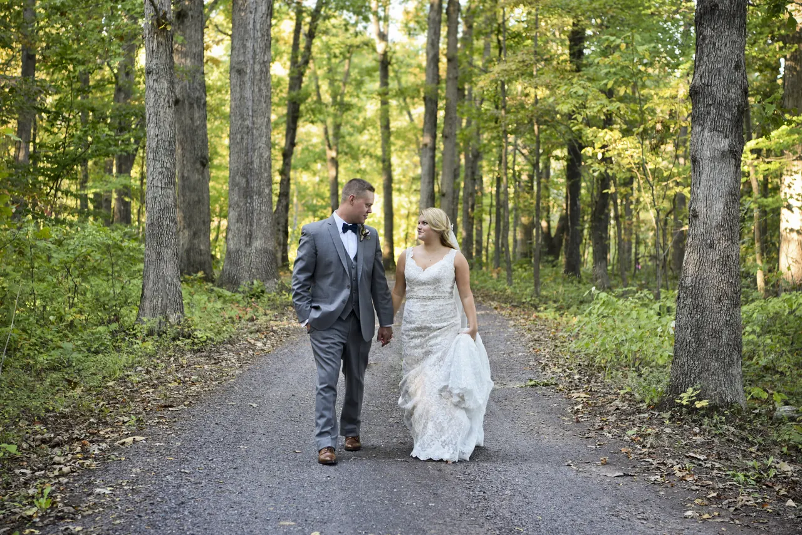
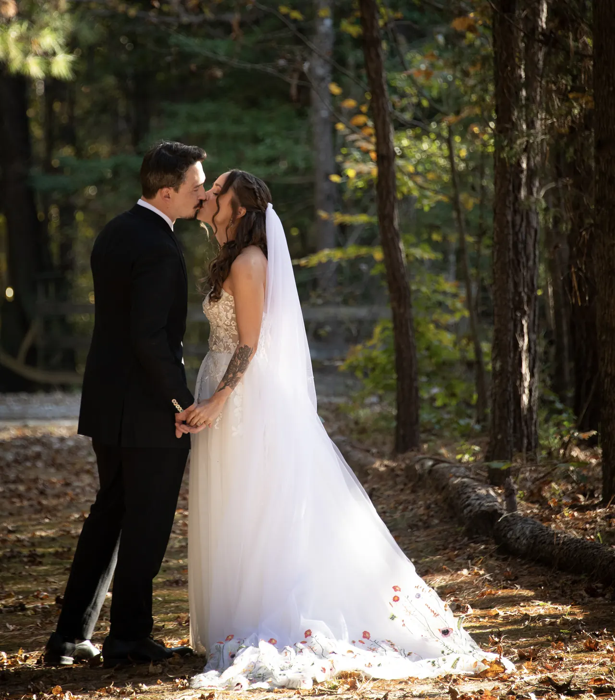
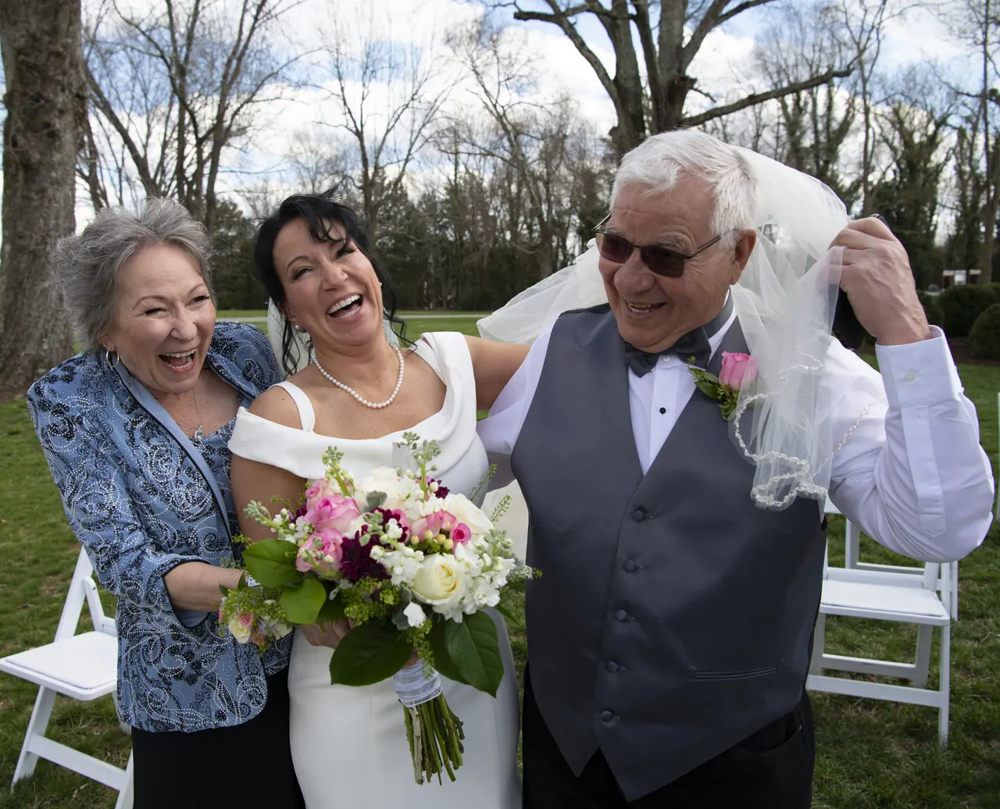
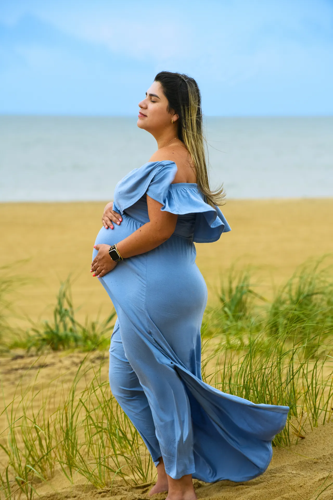
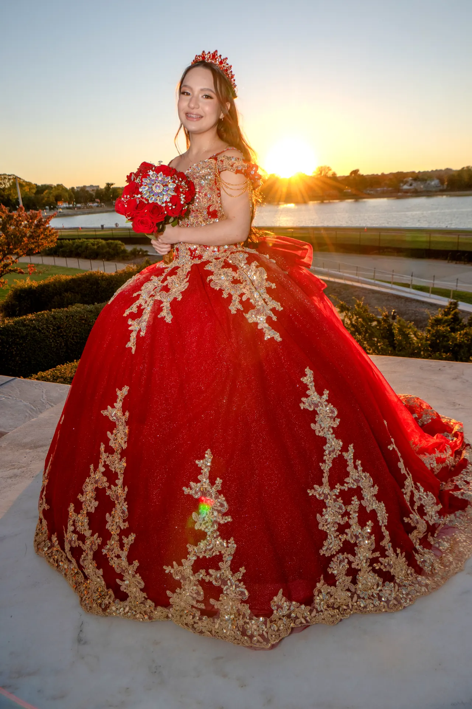
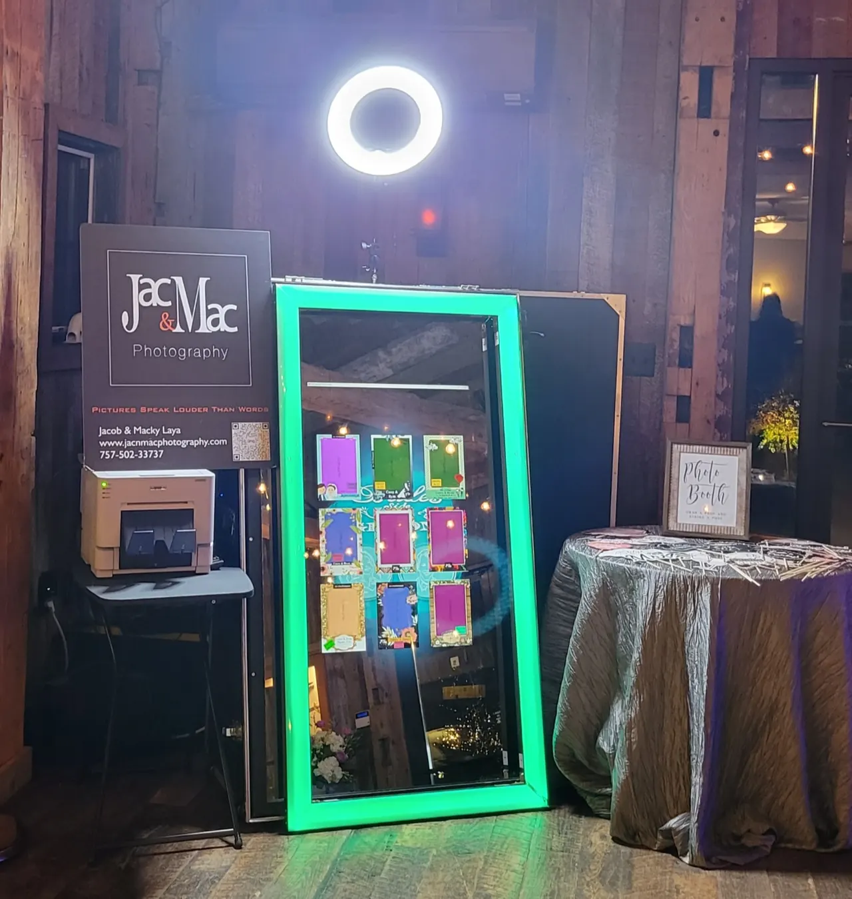
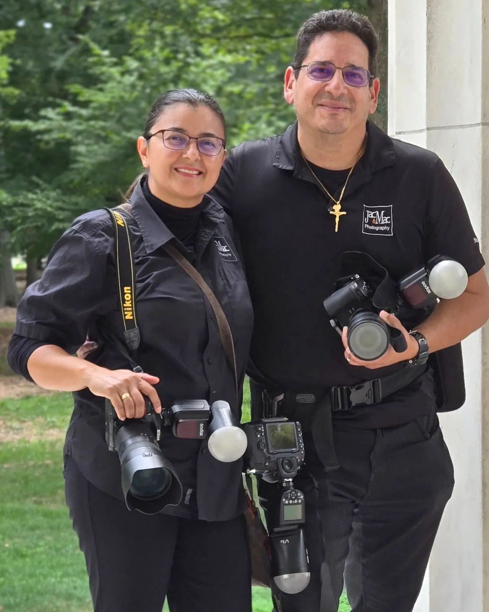
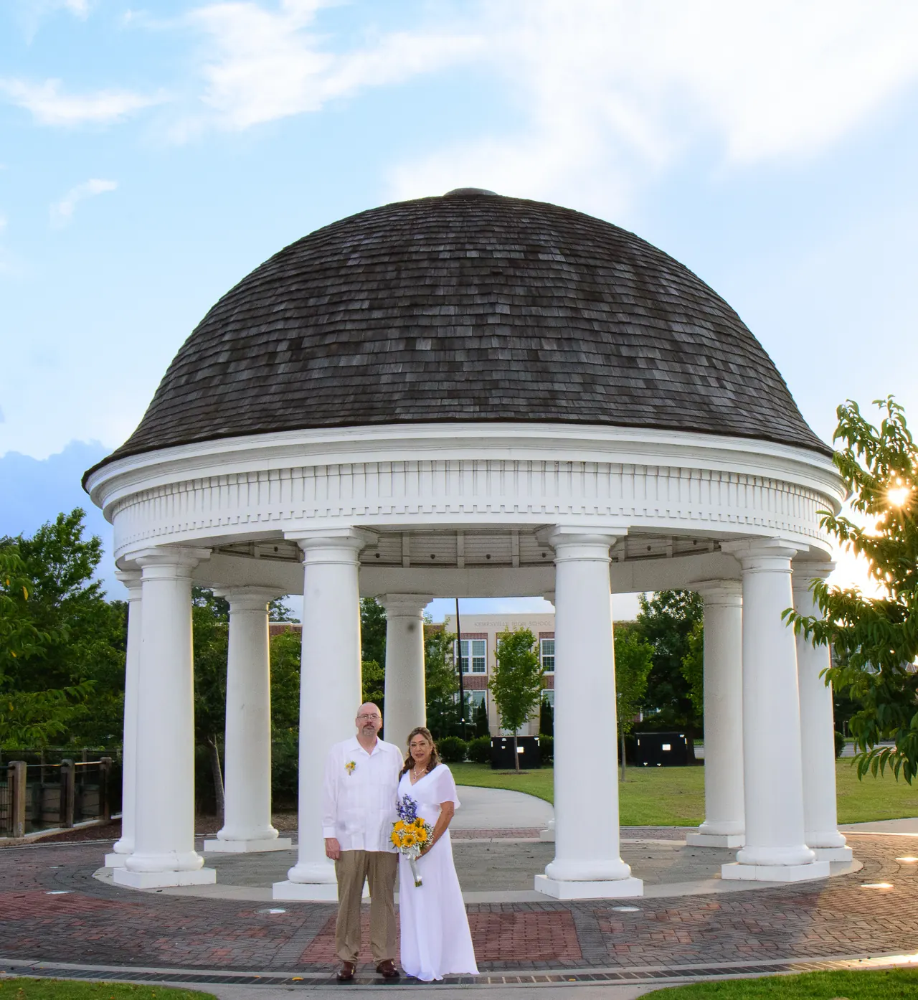

Weddings
Photography that captures the emotion, details, and real moments of your wedding day.
Story-driven photography for weddings, portraits, quinceañeras, events, and celebrations across Virginia, the DMV, Maryland, and Eastern Pennsylvania.
5-Stars across Google, Trustpilot, The Knot, WeddingWire, Bark.com, Wezoree and Zola
From weddings and engagements to family portraits, quinceañeras, events, and photo booth experiences, Jac&Mac Photography captures the moments you’ll want to remember long after the day has passed.
Based in Fredericksburg, VA and serving the DMV region, we photograph real emotion, meaningful details, and the people who make each celebration unforgettable.
Book Your Consultation


Photography that captures the emotion, details, and real moments of your wedding day.

Family, couples, maternity, graduation, and personal portraits that feel natural and true to you.

Beautiful, story-driven photography for one of the most meaningful celebrations in your family’s life.
Corporate events, company portraits, private parties, galas, and milestone celebrations in Fredericksburg, VA and throughout the DMV region.

Clients love our Mirror Me Photo Booth. It’s elegant and interactive, and your guests will have a blast collecting their own photo memories.

Jacobo & Macky Laya
Choosing the right photographer matters. Your wedding, celebration, or family milestone only happens once, and the wrong photographer can leave you with stiff, generic photos that don’t capture how the day actually felt.
We’re Jacobo and Macky, a husband-and-wife photography team based in Fredericksburg, VA, serving couples and families across Virginia, the DMV, Maryland, Delaware, and Eastern Pennsylvania.
With 17+ years behind the lens, 26 years of marriage, and 170+ five-star reviews, we understand how meaningful these moments are because we’ve lived them, too.
17+
Years behind
the lens
26
Years of
marriage
170+
Five-star
reviews
Veteran-owned business. Hablamos Español.
We don’t just show up and take pictures. We get to know you, help you feel prepared, stay connected throughout the planning process, and arrive ready to capture the moments that are uniquely yours.
For more than 17 years, we’ve had the honor of photographing weddings, portraits, quinceañeras, events, and family milestones across Virginia, the DMV, and the surrounding Mid-Atlantic region. After 26 years of marriage, we understand how meaningful it is to preserve the people, emotions, and once-in-a-lifetime moments that become part of your story.
We don’t believe photography is just about taking beautiful pictures. It’s about helping you remember how the moment felt.
We know what it means to build a life together, and we bring that understanding into every wedding and celebration we photograph.
With 17+ years photographing East Coast weddings and events, we know how to prepare, adapt, and capture the moments you may not even realize are happening.
Many of our clients come back for anniversaries, family portraits, and milestones because when someone photographs you with care, you remember it.
We’ve earned 170+ five-star reviews across platforms including Google, The Knot, WeddingWire, Zola, Trustpilot, Bark, and Wezoree.
We walk with you through the process, help you feel comfortable, and pay attention to the details so you can stay present in the moment.
Whether we’re photographing your wedding day, your family, your quinceañera, your business, or your next big celebration, our goal is always the same: to create images that feel honest, meaningful, and worth returning to for years. English and Spanish-speaking service available.
Book Your ConsultationWe start with a conversation about your day, your vision, and what matters most to you.
We’ll help you choose the photography package that fits your budget, event, timeline, and of course, priorities.
We review the details, timeline, location, and important moments before the day arrives.
You focus on the people you love. We focus on capturing the story.
Wedding Coordinator
I had the pleasure of working with Jac & Mac as the wedding coordinator for a recent event, and they were absolutely wonderful to work with! Incredibly responsive, professional, and easygoing—everything you want in a photography team. They communicated clearly leading up to the big day and were a calming, positive presence throughout. Their ability to capture beautiful, authentic moments while keeping things on schedule was such a gift. I highly recommend Jac & Mac to any couple or vendor looking for talented, reliable photographers!
Mother of the Bride
Jacob did an amazing job capturing all the special moments of our daughter's wedding day. Some of our favorites were the candid moments he captured. Highly recommend Jac&Mac Photography!!
Photo Booth & Event
Jacob's Photo Booth was the highlight of my event. He was very professional, came on time and did a great job setting up. […] Everyone went home with a print photo! We also like the photos that he immediately sent after the event. My guests loved him and everyone took his contact to book him for their event. I highly recommend Jacob's service for any event!
Networking Event
Jac&Mac Photography did an outstanding job capturing our Veterans Connect networking event! Their photos perfectly showcased the energy, professionalism, and camaraderie of the evening […] The quality and creativity of their work are top-notch, and they made the entire process smooth and enjoyable. We highly recommend them to anyone looking for exceptional photography that truly tells a story.
Graduation Session
Amazing! Agreed to a last minute late graduation photo shoot and I can say I truly appreciate it. Extreme professional, great customer service and captured some amazing shots. Will definitely book Jac&Mac again for another shoot.
Based in Fredericksburg, VA, Jac&Mac Photography serves weddings, portraits, and celebrations throughout Virginia, the DMV, Maryland, Delaware, Eastern Pennsylvania, and the greater Mid-Atlantic region.
Jac&Mac Photography regularly serves Fredericksburg, Stafford, Spotsylvania, Northern Virginia, Richmond, Washington DC, Maryland, and surrounding areas, both on-location and studio.
Not sure if we serve your area? Tell us where your wedding, session, or event is taking place, and we’ll let you know what coverage options are available.

Ready to talk through your photography needs? Whether you’re planning a wedding, portrait session, quinceañera, event, or photo booth experience, we’d love to hear what you’re creating.
Let’s plan how to capture your story in the perfect light. Check out our availability and book the date and time that works for you.